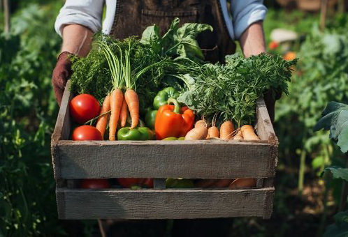
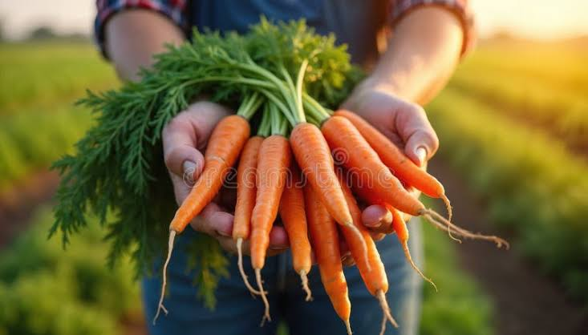
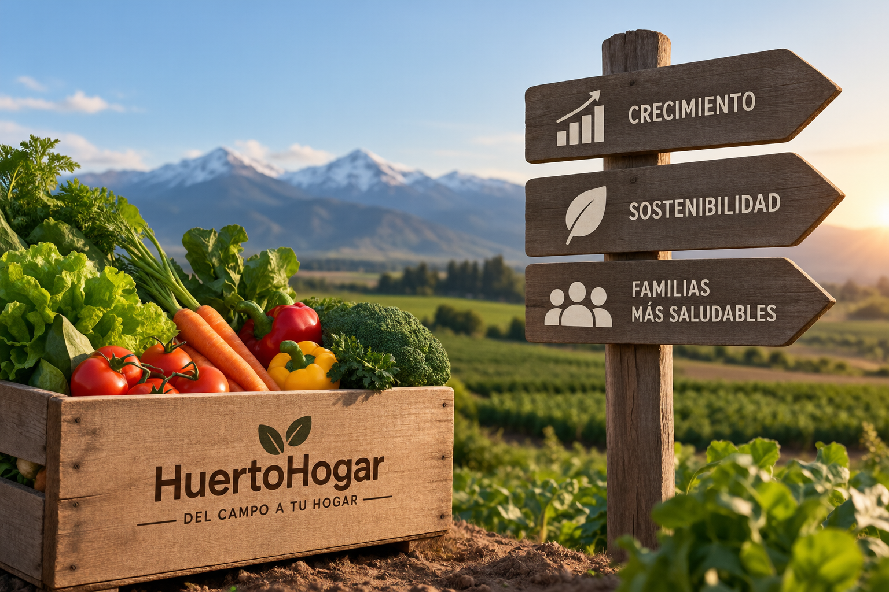

Sobre HuertoHogar
HuertoHogar es una tienda online que busca acercar productos frescos y de calidad directamente desde el campo hasta los hogares de las familias chilenas. La empresa cuenta con más de 6 años de experiencia y trabaja para ofrecer una alternativa cercana y confiable para quienes buscan alimentos frescos y naturales. Su propuesta busca facilitar el acceso a productos provenientes de agricultores y productores locales, fortaleciendo el vínculo entre el campo y las familias. De esta manera, HuertoHogar busca entregar una experiencia de compra basada en la calidad de sus productos y en el compromiso con sus clientes.
Contamos con más de 6 años de experiencia y operamos en más de 9 puntos a lo largo del país.


Nuestra misión
Nuestra misión es conectar a las familias chilenas con el campo, facilitando el acceso a productos frescos, naturales y de calidad. En HuertoHogar buscamos acercar a nuestros clientes a los productores locales, promoviendo una alimentación saludable y responsable.
También buscamos apoyar a los agricultores y productores de distintas localidades de Chile, fortaleciendo el vínculo entre quienes trabajan la tierra y las familias que disfrutan de sus productos. De esta manera, promovemos el consumo de alimentos frescos y prácticas sostenibles, manteniendo nuestro compromiso con la calidad y el bienestar de nuestros clientes.
Nuestra visión
Nuestra misión es conectar a las familias chilenas con el campo, ofreciendo productos frescos y de calidad directamente de productores locales. En HuertoHogar buscamos facilitar el acceso a alimentos saludables y naturales, acercando el trabajo de los agricultores a nuestros clientes.
Además, queremos contribuir a una alimentación más saludable y promover prácticas sostenibles, apoyando a los productores locales y fortaleciendo el vínculo entre las familias y el campo. Nuestro compromiso es entregar productos de calidad y una experiencia de compra cercana y confiable.

¿Dónde estamos?
HuertoHogar cuenta con presencia en distintas localidades de Chile.